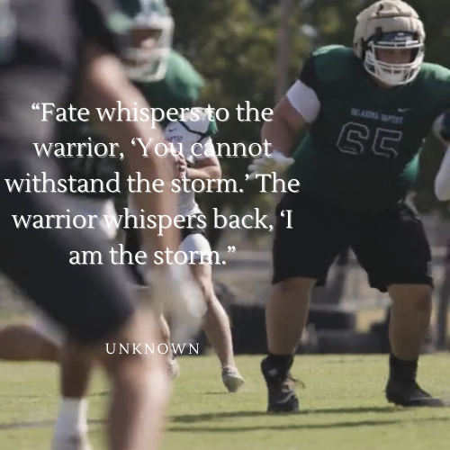
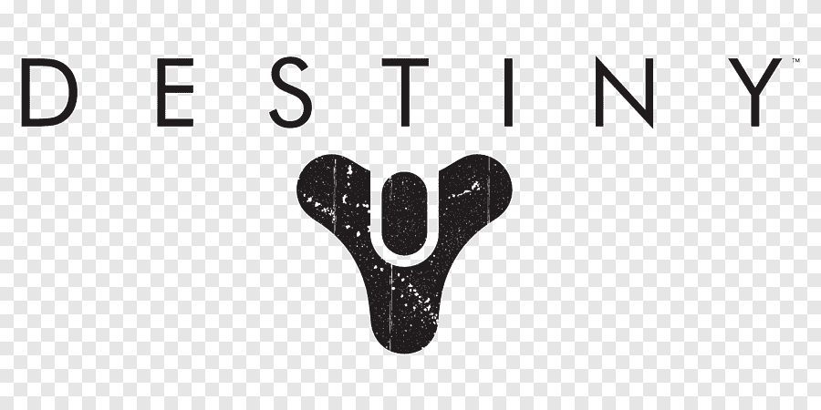

My personal mission statement:
“Fate whispers to the warrior, ‘You cannot withstand the storm.’
The warrior whispers back, ‘I am the storm.”-Unknown

Education:
I went to Union High School, where I graduated in 2019.
I then committed to Oklahoma Baptist University.
I am currently a Computer Science Student, expecting to graduate in December, 2023
I am taking web development, as well as software development, and want to work in one of those areas.
I have recieved multiple business scholarships for being an outstanding business student.
This semester I lead as a President in Dr Green's Marketing Simulation.
Work Experience:
Union HS (2017-2019)
I worked at Union while I was a student in high school performing services
to help the students and teachers during the school day.
Home Depot (2020)
I worked at home depot during quarentine, following us being sent home
from school. I was a freight associate, where I would unload freight off of
trucks, and then stock those products to the shelves at night.
Union IT (2021-2022)
Because of my previous experience working for union in high school, I was invited to work there
over the summer.
My main duties were assisting the laptop teams, where we did inventory, collection, cleaning and
repairs.
Chisholm (2020)
Also during covid, I was able to go and help Chisholm's IT department with their move to a new
office.
I spent a couple of weeks working with their senior IT director in order to help move, and setup
the new equipment.
Union Public Schools (2023-Current)
I began at Union Public Schools in December of 2023 as a Computer Repair Technician. At Union, I
am in charge of all IT issues at 2 elementary schools.
My Hobbies
I am a big gamer, I play games on PC and Xbox.
I play a variety of different games(usually with my friends):
Games I Play:
Apex Legends
NBA2K
Madden NFL Football
Overwatch
Call of Duty
Destiny 2
I am also interested in video editing, and like to work on my gaming clips to practice.
I have worked with different apps such as photoshop in order to create graphics, and thumbnails for some
youtubers.
I feel like all these interests somewhat blend together, and I think that's a pretty cool connection.
In addition, I like to buy and sell sports cards/memoribilia, mostly Dallas Cowboys and Oklahoma
players.
My Activities:
I am a football player, and I have been for a majority of my life.
I play Offensive Line, I was a Tackle in High School, and then a Guard in college.
It is very time consuming, but I enjoy the work, and then seeing the work pay off on the field.
If you're interested, you can see some highlights from this past season here: